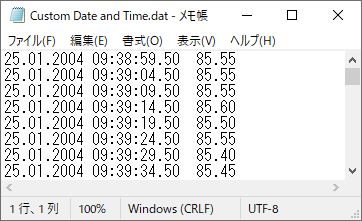
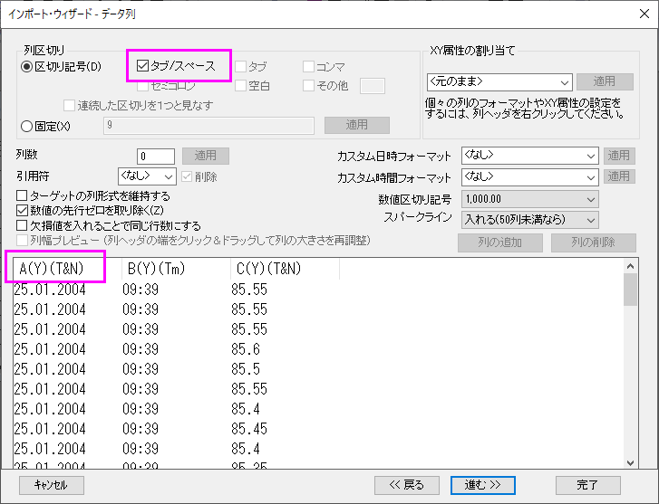
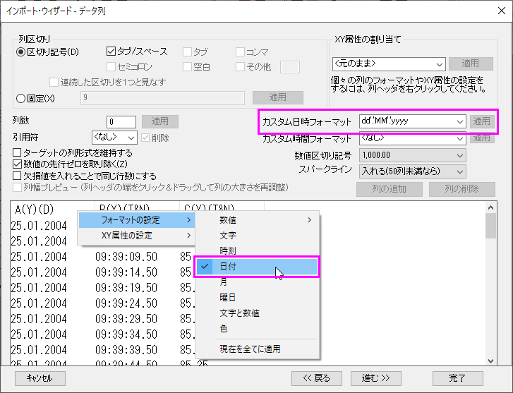
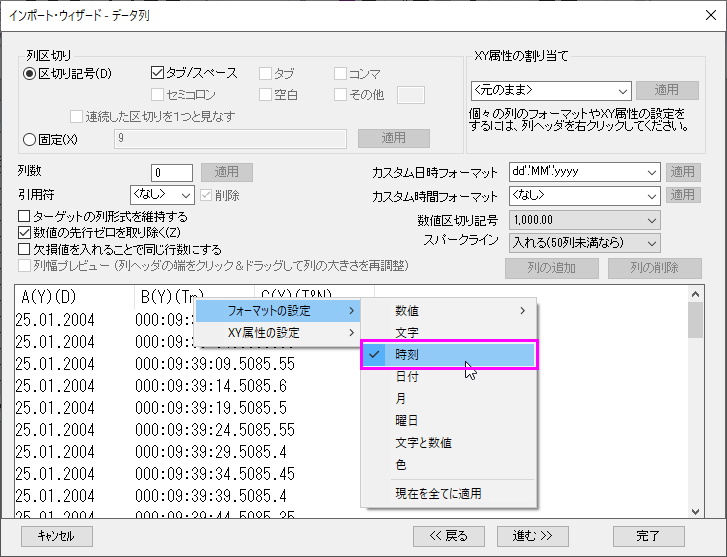
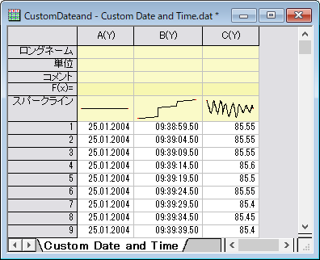
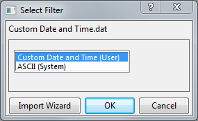

時系列データのインポート
Import-Time-Data
概要
最近のバージョンのOriginでは、日時データのインポートが改良されました。Origin 2020bでは、Text/CSVコネクタの日時インポートが改善され、Origin 2021では、MSExcelからコピー/貼り付けする際の日時の処理が改善されました。
それでも、カスタムの日時形式が自動的に処理されない場合もあります。その場合、Originのインポートウィザードを使用して、日時データの解析とフォーマットを行うことができます。このチュートリアルでは、インポートウィザードを使用してカスタム日時形式データをインポートする方法を示します。
必要なOriginのバージョン:Origin 8.0 SR3以降
学習する項目
このチュートリアルでは以下の操作をします。
- 複数の区切り文字を使用してデータをインポートする方法
- カスタムの日付/時刻フォーマットを定義する方法
- カスタムの日付/時刻形式の表示設定を変更する方法
- インポート設定をフィルタに保存して再利用する方法
ステップ
- このチュートリアルでは、\Samples\Import and Export\Custom Date and Time.dat をインポートします。ファイルをインポートする前に、データの構造を確認します。
- 
Date と Time の間にスペースがあり、Time と残りのデータはTabで区切られています。このデータをインポートするには、複数の区切り文字を使用する必要があります。
- インポートウィザードでファイルを開きます。データ列ページが開くまでデフォルトの設定のまま進みます。デフォルトでは、OriginはTabを区切り文字として2つの列を分離します。Date と Time を分けるには、列区切りグループのタブ/スペースチェックボックスにチェックを付けます。
- 
プレビューボックスで、列のタイトルがA(Y)(T&N)となっていますが、(T&N)は、データ形式が文字と数値 であることを意味します。年月日を「.」で区切っているため、この1列目が文字と認識されています。2列目のTime は、Originでは数値が表示されます。データを正しくインポートするために、列のプロパティを変更する必要があります。
- カスタム日時フォーマット編集ボックスに以下を入力します。
dd'.'MM'.'yyyy
dd、MM、yyyy はそれぞれ日、月、年を指します。区切文字として「.」が使用されているので、これをシングルクオーテーションで囲んでいます。カスタムフォーマットを入力したら、編集ボックスの隣にある適用ボタンをクリックします。プレビューの最初の列のヘッダを右クリックし、フォーマットの設定：日付を選択します。
- 
列タイトルがA(Y)(D)になり、日付データとして認識されます。
- 同様にして、2列目のヘッダを右クリックして、フォーマットの設定：時刻 を選択して時刻列に設定します。
- 
長い時間データフォーマットが使用されています。これはインポート後に設定変更可能です。
- 「進む」を2回クリックし、「フィルタの保存」ページに移動します。フィルタを保存するのチェックボックスにチェックを付け、ユーザファイルのフォルダに保存のままインポートの設定をフィルタに保存します。ファイル名（拡張子.OIFが自動付加）にCustom Date and Timeを入力します。
- 完了ボタンをクリックして、データをインポートします。2番目の列ヘッダをダブルクリックして列プロパティダイアログを開き、表示を以下に変更します。
HH:mm:ss.##
インポート後のワークシートデータは以下のようになっているはずです。
- 
- Windowsエクスプローラで\Samples\Import and Export\ フォルダを開きます。Custom Date and Time.dat を探し、Originのワークスペースにドラッグ&ドロップします。フィルタの選択ダイアログが開くのでフィルタを選択します。
- 
保存した、Custom Date and Timeを選択します。ファイルをインポートするのにこのフィルタが使われます。
Note: このデータファイルの場合、最初の列のすべての行で日付が同じです。そのため、インポートウィザードのプレビューで列ヘッダを右クリックしてXY属性の設定：無し を選択し、この最初の列の属性をなしにすることをお勧めします。次に、2番目の列をXデータとして設定すれば、3番目の列のデータを2番目の列の時間データに対してプロットできます。